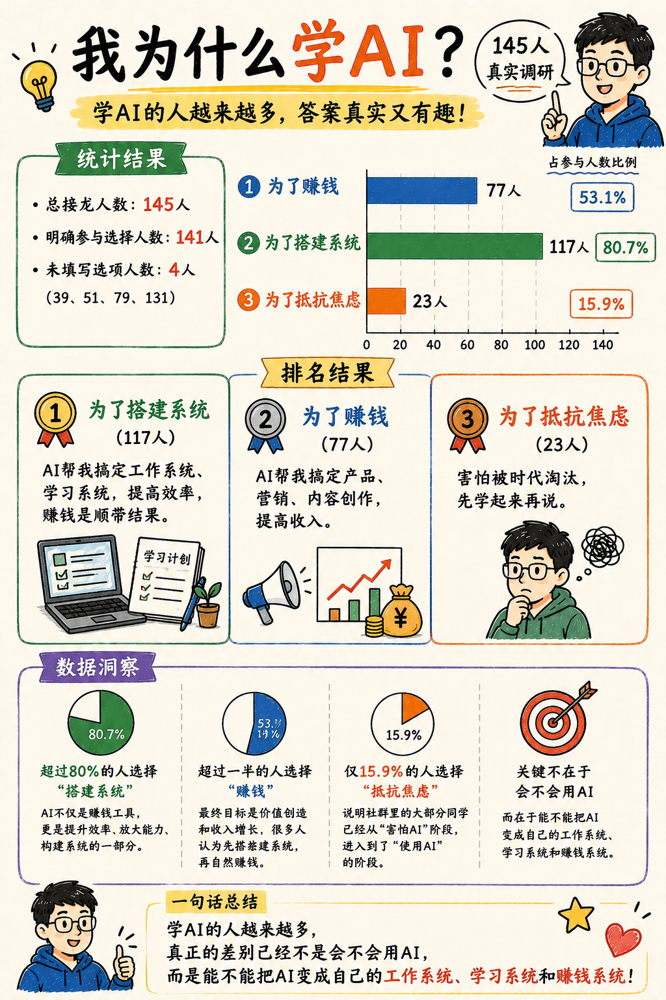
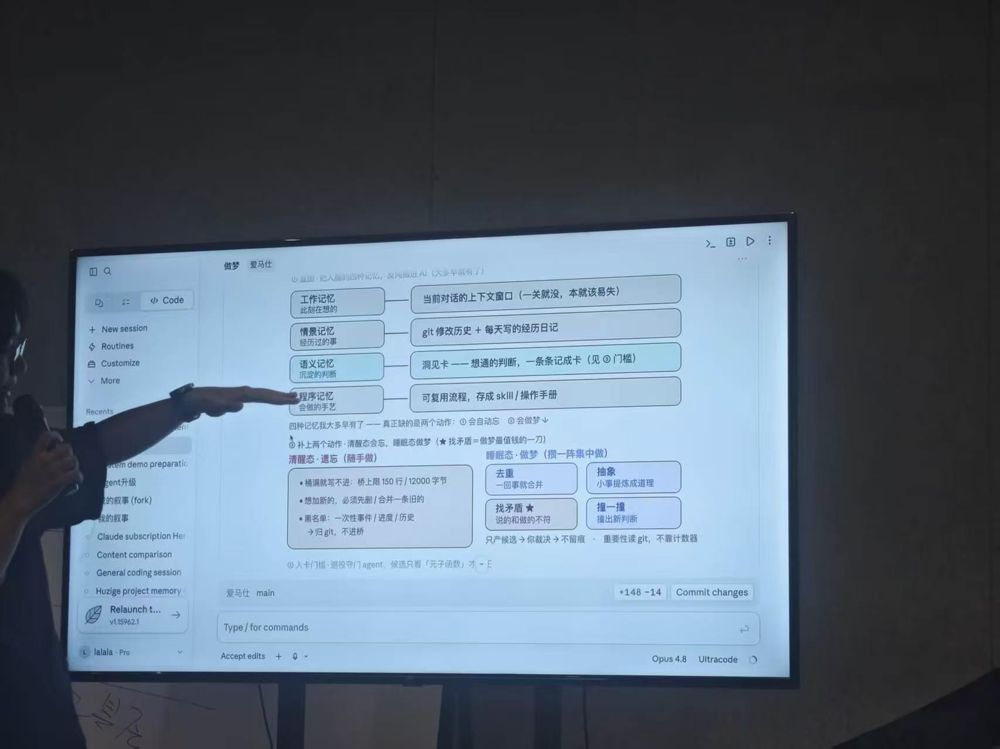
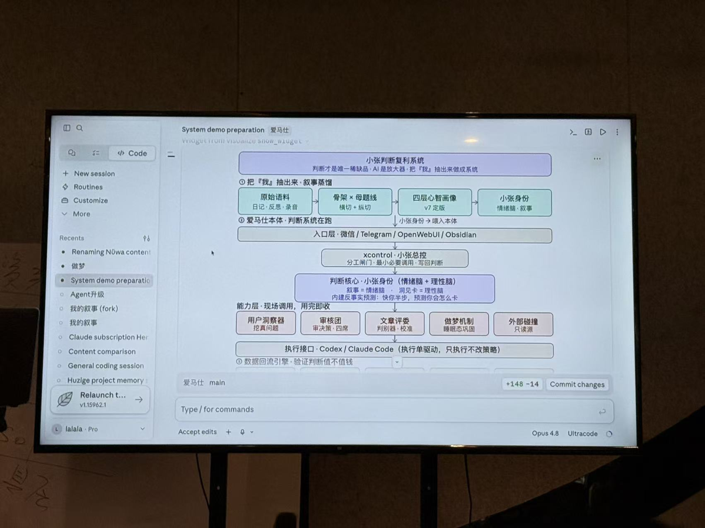
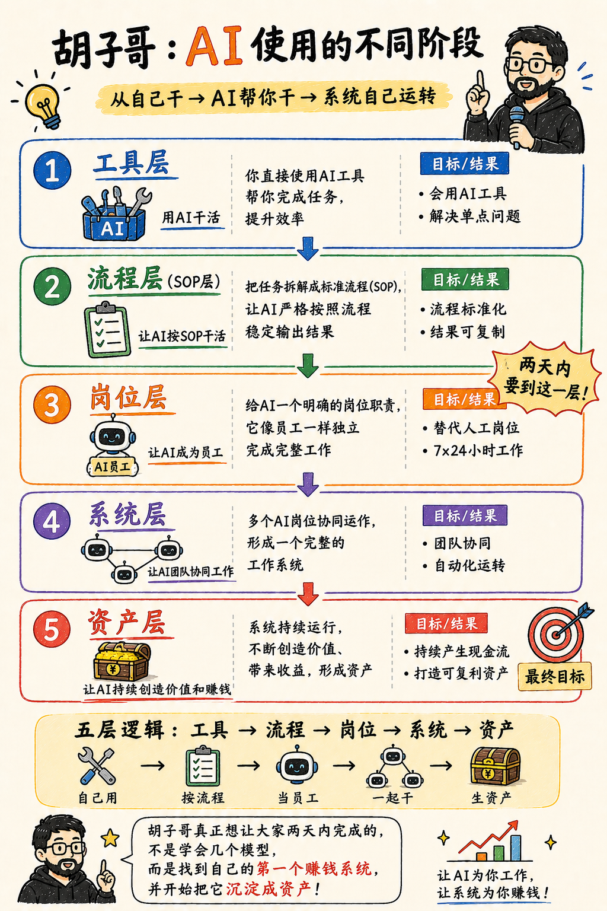
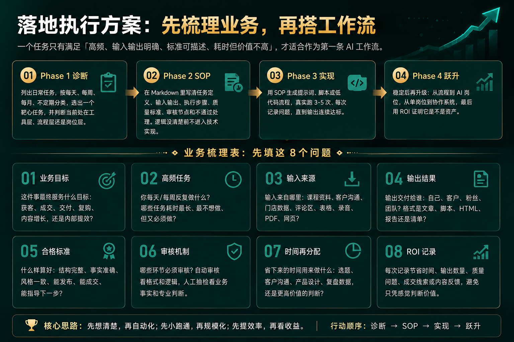
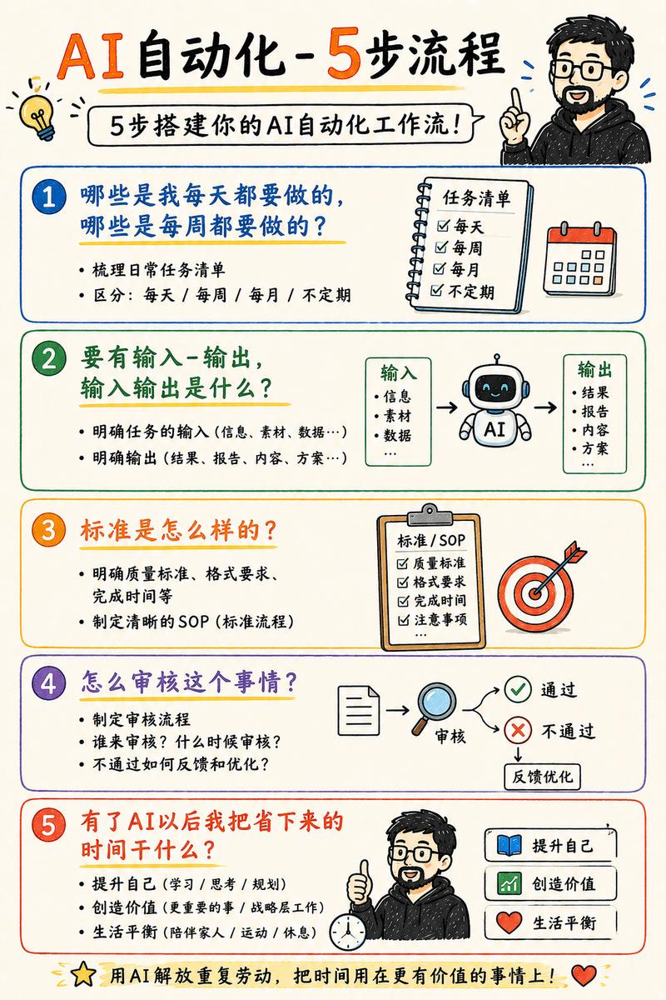

当天总览
从工具到资产的 AI 进阶
判断标准：单点调用 -> 业务复利
实战方向分组
系统搭建、知识管理、赚钱系统
核心落地目标
当天搭出一个可工作的 AI 流程
Visual Notes
把现场内容沉淀成图谱
这些图片不是装饰，而是这套系统的关键证据：动机、方法、入口、路由、记忆和判断。

为什么学 AI：目标已经从“会用”转向“搭系统”
调研里超过 80% 的人选择“为了搭建系统”，这正好解释了本页为什么围绕工作流、学习系统和赚钱系统展开。

内容复利工厂
发布后的数据、评论和用户痛点，要回流到人设档案与素材库。

长期记忆与做梦机制
让 AI 定期去重、找矛盾、抽象经验。

把判断力放进系统
强模型负责审核、挑错、重构，普通模型负责执行。

双入口决策
没方向时先推选题，有方向时补结构。

Skill 路由表
调度器判断步骤，执行器只做一件事。
核心框架
AI 工作流五层模型
单点调用
解决一次性任务，下次还得重新想提示词。产物：提示词清单。
SOP化
把任务拆成固定步骤，下次能复用。产物：Markdown SOP。
AI 岗位
AI 承担明确职责（执行、审核、统筹）。产物：角色说明书。
协同闭环
多岗位协同，有质检和纠错机制。产物：自检流程、日志。
业务资产
持续产生复利，实现降本增效。产物：产品、服务、数据。

五层逻辑的可视化版本
这张图适合给第一次接触的人看：工具、流程、岗位、系统、资产，每层对应不同的交付目标。
讲者内容摘要
构建 AI 工作流资产
真正有价值的工作流不是替人许愿，而是先想清楚目标、输入、输出和执行标准。系统内要设置“质量关卡”，普通模型做执行，强模型负责“审核、挑错和重构”。
把判断力蒸馏进 AI
核心是管理“长期记忆”。通过做梦机制（清醒记录碎片 -> 睡眠态去重、找矛盾、提炼判断），让 AI 随着个人的成长而成长，真正理解你的思想演变和成功经验。
实体商家的内容闭环
通过“内容复利工厂”模式：发布视频后将播放数据、评论、用户痛点回流到门店人设档案中。让每一次内容生产都成为下一次增长的原材料。
从听课到设计冲刺
不仅要看见已有的结果，更要现场练习。采用世界咖啡模式，围绕系统、内容、赚钱或主业放大进行实战，先梳理逻辑，再调用 AI。
系统拆解
Skill 搭建地图：原子化你的系统
business-task-diagnosis
选出最值得自动化的靶心任务
workflow-sop-builder
将模糊想法写成 AI 可执行的 SOP
course-summary-html
把碎片资料整理成结构化总结页面
review-quality-gate
AI 审计员，不合格的结果禁止输出
content-compound-factory
把单次生产转化为选题与素材库
persona-material-archive
沉淀你自己的表达风格和观点语料
memory-dreaming
定期对知识库进行去重、合并与抽象
roi-workflow-review
评估系统是否真的节省了时间或成本

落地执行方案：先梳理业务，再搭工作流
这张图作为本区主图，完整承接“诊断、SOP、实现、跃升”和 8 个业务梳理问题。
4 阶段落地执行方案
Phase 1 诊断
列出所有任务，选出一个高频、耗时、但标准明确的“靶心任务”。
Phase 2 SOP
在 Markdown 中写清定义、输入输出、标准。逻辑不清楚不要写提示词。
Phase 3 实现
真实跑 3-5 次。根据 AI 的表现调整审核节点，直到输出结果连续达标。
Phase 4 资产化
加入回流机制。不仅完成任务，还要把结果数据存入知识库。
先填这 8 个业务梳理问题

Checklist
5 步流程作为执行检查表
它和上方主图有重复，所以不再单独展开一套结构，只作为落地前的核对清单：任务频率、输入输出、标准、审核、省下时间后的再分配。